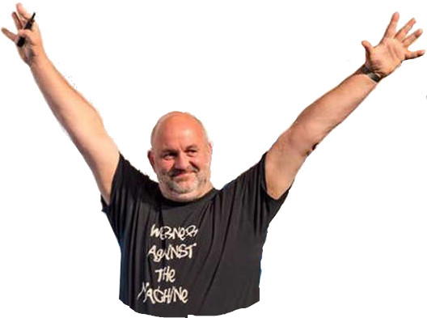

Slutt med IT-prosjekter!
Kode59 Lyntalekveld

Hva er et prosjekt?
“Et prosjekt er entidsavgrenset bestrebelsefor å skape et unikt produkt eller en tjeneste ... det har endefinert start- og slutt-tid, og derfordefinert scope og ressurser... et prosjekt-team inkluderer oftefolk som vanligvis ikke jobber sammen...”
💵
🎯
👫👫👫
Men prosjektene er jo Smidig!
Smidig er ikke nok!
“You build it, you run it”
DevOps = “Developers carry beepers”

Utfordringer med prosjekt som arbeidsform
- vanskelig å realisere gevinster skape verdi fortløpende
- konflikt mellom prosjektets mål og virksomhetens mål
- stor avstand mellom prosjekt- og linjeorganisasjon
- kortsiktig finansieringsmodell
- utfordringer med overlevering og kunnskapsoverføring
- vanskelig å skalere
Brooks' law

Adding manpower to a late
software project makes it later
Alternativet
Kontinuerlige produktutviklingsløp i linja.
Kontinuerlig ...
- verdiskaping
- justering av initiativene opp mot virksomhetens mål
- involvering av hele organisasjonen
- finansiering
- kommunikasjon
- kunnskapsbygging istedenfor kunnskapsoverlevering
- skalering ved løpende omprioritering av finansiering
Hva sier forskning?
Fixed-priceprojects ... were, in general,less successfulthan other projects.
Success in terms of client benefit was onlyweakly correlated withsuccess in terms of“on time” and “on budget”
Benefit managementplanning before the project started and benefit management activities during project execution wereconnected with successon delivering client benefits
Agile projects were, in general, more successful than other projects,butagile projectswithout flexible scopeto reflect changed user needs and learning,orwithout frequent deliveryto the client,had less than average success
Kjennetegn ved suksessfulle smidige “prosjekter”
- løpende timer – ikke fastpris
- på tid og budsjett er mindre viktig
- måler verdiskaping kontinuerlig
- fleksibelt scope
- hyppige leveranser
“Smidig” uten disse egenskapene
har mindre enn gjennomsnittlig suksess.(!)
Du kunne like gjerne drevet med vannfall!!!
Høres ut som noe som er bedre egnet i linja spør du meg!
Noen råd på veien:
- Eksperimenter med nye idéer i linja
- Sett sammen autonome team med all kompetanse som skal til for å gjennomføre eksperimentene
- Eksperimentene må være målbare (og måles)
- Forretning må hele tiden samarbeide tett med teamene
- Alle må samarbeide tett med brukerne
- Utviklere må være ansvarlige fra unnfangelse til end of life for tjenestene de lager
- Teamet må ha beredskap!
- Lever fungerende programvare til produksjon fra dag én
- Ikke implementer endringene som et prosjekt!
“Å jobbe i linja er nårfolk som kjenner hverandrejobber sammen iautonome teamsom skaper unike produkter eller tjenesterkontinuerlig, og taransvar for hele livssyklusen til systemenede lager, ogmåler verdienopp motforretningens visjon...”
Være med og bygge Haugalandets fremste teknologimiljø?
- Utviklere
- Data Scientists
- Senior Tjenestedesigner
- IT Sikkerhetssjef (CISO)
- Systemansvarlig fag- og kartsystemer